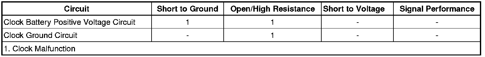

Clock Malfunction
Clock Malfunction
Diagnostic Instructions
* Perform the Diagnostic System Check - Vehicle (Initial Inspection and Diagnostic Overview) prior to using this diagnostic procedure.
* Review Strategy Based Diagnosis (Initial Inspection and Diagnostic Overview) for an overview of the diagnostic approach.
* Diagnostic Procedure Instructions (Initial Inspection and Diagnostic Overview) provides an overview of each diagnostic category.
Diagnostic Fault Information

Circuit/System Description
The instrument panel cluster (IPC) is equipped with an analog clock. The analog clock utilizes battery positive voltage circuit from the BCM and the clock ground circuit to operate. An open circuit condition, a high resistance or a short to ground in the battery positive circuit or the ground circuit will cause the clock not to operate properly.
Reference Information
Schematic Reference
Instrument Cluster Schematics (Instrument Cluster Schematics)
Connector End View Reference
Component Connector End Views (Connector Views)
Description and Operation
Instrument Cluster Description and Operation (Description and Operation)
Electrical Information Reference
* Circuit Testing (Component Tests and General Diagnostics)
* Connector Repairs (Component Tests and General Diagnostics)
* Testing for Intermittent Conditions and Poor Connections (Component Tests and General Diagnostics)
* Wiring Repairs (Component Tests and General Diagnostics)
Scan Tool Reference
Control Module References (Programming and Relearning)
Circuit/System Testing
1. Ignition OFF, disconnect the harness connector at the clock.
2. Ignition OFF, test for less than 1 ohm of resistance between the ground circuit terminal 2 and ground.
• If greater than the specified value, test the ground circuit for an open/high resistance.
3. Ignition ON, verify that a test lamp illuminates between the B+ voltage circuit terminal 3 and ground.
• If the test lamp does not illuminate, test the B+ voltage circuit for a short to ground or an open/high resistance.
4. If all circuits test normal, replace the clock.
Repair Instructions
Perform the Diagnostic Repair Verification (Verification Tests) after completing the diagnostic procedure.
Clock Replacement (Service and Repair)